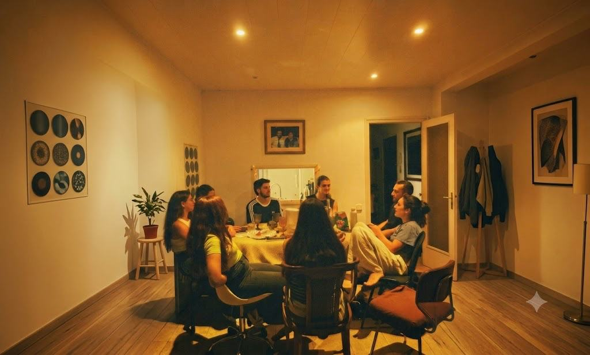
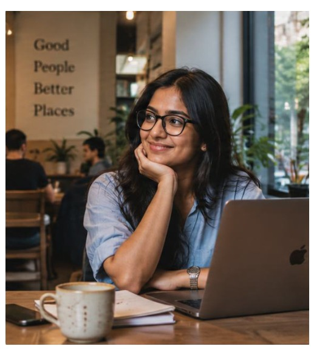

"Chai Stalls or Chat Rooms?"
15
PROFESSIONALS INTERVIEWED
8
THEMES IDENTIFIED
5
DOMAIN LITERATURE REVIEW
As traditional third places — tea stalls, clubhouses, neighbourhood parks — fade in urban India, what are young working professionals switching to, and how do they actually feel about the switch? This research project set out to answer that, not with surveys or assumptions, but through the kind of slow, open-ended conversation that lets people say what they actually mean.

Name: Priya I Age: 27 yrs
Moves between work, home, and planned social activities, with little time for spontaneous hangouts.
behavior
Wants to rediscover the ease of meeting people in informal, welcoming places without having to organize everything in advance.
goal
Finds it harder to discover third places that feel spontaneous and accessible in a life increasingly shaped by screens, schedules, and planned interactions.
difficulty
"I miss having places where you could just show up and something would happen."
Across all 15 participants, social chemistry consistently outweighed proximity or aesthetics. The space mattered less than who would be in it. This shift from geography as the organising principle to relationship quality is the finding that reframes everything else.
Participants described a gradual, often unnoticed transition: hangouts that used to just happen now have to be scheduled. Spontaneous third place culture requires unstructured time which urban working life systematically removes.
Digital substitutes exist but don't fully satisfy. Participants consistently described in-person interaction as providing a kind of sensory and emotional clarity that digital couldn't replicate — something was lost even when the connection was maintained.
Interest-based communities (hobby groups, professional networks, online forums) are now competing with geography-based ones. Belonging no longer requires living near someone. It requires caring about the same things.
The research didn't end with a product. It ended with four evidence-backed directions for designers and planners working on community problems. Each direction came directly from a pattern in the interview data — not from general theory, but from what 15 people in urban India actually described wanting.
Design for shared cultural memory — use familiar rituals (chai, a particular game, a shared playlist) as low-pressure icebreakers for new community formation
Build a repeatable 'community design pipeline' — a structured approach for creating spaces that can be replicated at different urban scales
Create hybrid spaces that use digital tools to spark real-world meetups, not replace them — the digital layer as a coordination tool, not a destination
Design for proximity and walkability — re-centre physical third places within 10-minute walk radii, since proximity is what enables spontaneity
This was the line from the thematic analysis that reframed the whole paper. It shifted the design question from 'how do we preserve physical third places' to 'how do we design for the conditions under which social chemistry can form?' Those are different problems with very different solutions — and the data pointed to the second one.
Running thematic analysis on 15 interviews — coding line by line, grouping into themes, finding the unexpected pattern — changed how I think about the early stages of any design project. The rigour isn't in the number of participants. It's in the quality of listening.
'Comfort', 'familiarity', 'belonging' sound soft until you see how consistently they drive behaviour. Every participant who described switching to digital third places also described something missing. The emotional residue of physical space isn't a nice-to-have — it's load-bearing.
My contribution was two of the eight themes — writing them up forced a clarity that the analysis alone didn't. You can code data without understanding it. You can't write about it without understanding it. The writing was where the research actually finished.
15
PROFESSIONALS INTERVIEWED
8
THEMES IDENTIFIED
5
DOMAIN LITERATURE REVIEW